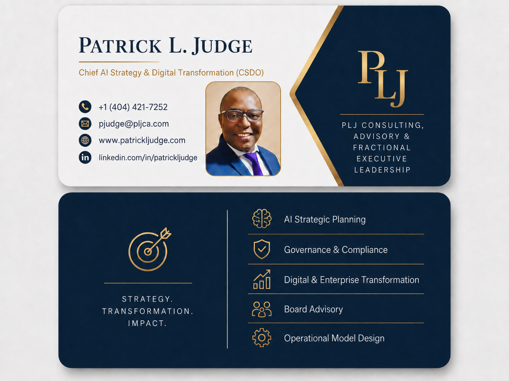

AI Strategic Planning
Define enterprise AI priorities, use cases, data readiness, adoption plans and executive decision rights.
AI Strategy • Governance • Enterprise Transformation • Risk & Compliance • Board Advisory • Fractional Executive Leadership
I help boards, CEOs, executive teams and growth leaders modernize operations, govern AI responsibly, restructure business units and convert strategy into measurable execution.
Board-ready strategy, practical operating models and transformation leadership for organizations that need speed, governance and growth.
A practical advisory platform for organizations that need AI clarity, accountable governance, transformation execution discipline, and measurable business value.
Define enterprise AI priorities, use cases, data readiness, adoption plans and executive decision rights.
Establish responsible AI controls, oversight, policy guardrails, compliance alignment and risk reporting.
Connect strategy, funding, roadmap execution, PMO discipline and measurable benefits realization.
Advise boards and executive teams on AI oversight, transformation risk, digital strategy and growth priorities.
Provide senior AI, digital transformation and growth leadership without a full-time executive commitment.
Help large organizations and SMEs sharpen strategy, improve revenue growth and scale operating discipline.
A disciplined approach for moving from executive ambition to governed execution, adoption, and measurable enterprise impact.
Perspective for boards, CEOs, transformation leaders, and growth executives navigating AI strategy, governance, risk, compliance, operating model change, and enterprise execution.
AI oversight is becoming a board-level responsibility because AI decisions can affect customers, employees, operations, third-party vendors, regulatory exposure, and enterprise reputation.
Responsible AI governance should operate as a repeatable management system that shapes how AI use cases are selected, approved, deployed, monitored, and improved.
AI strategy fails when reduced to a technology roadmap. AI changes how work is performed, how decisions are made, and how leaders measure performance.
The modern PMO should be a value realization office that helps leaders choose the right work, fund the right priorities, remove blockers, and measure enterprise impact.

Chief AI Strategy & Digital Transformation Executive

Use the QR code or download Patrick’s contact card below.
For board advisory, AI strategy, digital transformation, fractional executive or restructuring engagements, contact Patrick directly.
{kind=link}